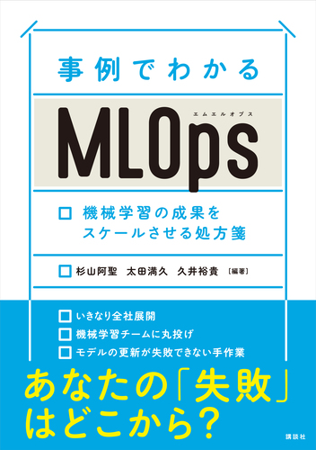

Data Competition
Kaggle
- Mechanisms of Action (MoA) Prediction - 34th/4373 Silver medal (team)
- ASHRAE - Great Energy Predictor III - 69th/3594 Silver medal (solo)
- IEEE-CIS Fraud Detection - 288th/6381 Silver medal (solo)
- Shopee - Price Match Guarantee - 179th/2464 Bronze medal (solo)
Projects
MLOps Practices
- 各社の MLOps に関する事例を集めた Web サイト
MLOps community JP
- 運営スタッフとして，イベントの企画とコミュニティーの運営をしています
Presentations
[2nd Oct. 2024] 第45回 『事例でわかるMLOps 機械学習の成果をスケールさせる処方箋』 出版記念 MLOps勉強会
[28th Mar. 2024] ML Career Night #1｜生成AI時代の機械学習エンジニアのキャリア戦略
[31th Oct. 2023] 第35回 MLOps 勉強会
[26th Jan. 2023] MoT/コネヒト/Kanmu が語るプロダクト開発xデータ分析
[17th Jan. 2023] JAWS-UG AI/ML #15
[8th Oct. 2022] JAWS DAYS 2022 - Satellites
[4th Apr. 2022] 第18回 MLOps 勉強会
[Closed Event. 2021] こんなに違う大手とベンチャー！ 就活前に知りたかった IT 業界の舞台裏
Books
-
事例でわかるMLOps 機械学習の成果をスケールさせる処方箋 (KS情報科学専門書)
- 第2部 MLOpsの実践事例と処方箋 - 10章 ML Test Score を用いた機械学習システムの定量的なアセスメント

Articles
- ML/DS Sectionと未来のコミュニティ
- データの力でプロダクトに革新を！データチームの今と未来
- 機械学習基盤のアーキテクチャ特集 〜8社の設計意図と今後の展望〜
- コミューンが考える 技術発信の意義と今後の展望
- 「ML Career Night #1｜生成AI時代の機械学習エンジニアのキャリア戦略」 イベントレポート
Company’s Tech Blog
本業 or 副業先の会社で書いたテックブログ
- サービス×環境毎に用意していた GitHub Actions をサービス毎で1つに整理しました
- Vertex AI Pipelines で利用している Kubeflow Pipelines を v2 へ移行しました
- ニアリアルタイムで投稿レコメンドをユーザーに届ける
- コミュニティプラットフォームの投稿レコメンド機能を支える機械学習基盤
- Cloud Firestore を活用したバッチレコメンドシステムを開発した話
- BigQuery のシャーディングされたテーブルを OpenSearch へ連携する方法
- Character filter を用いたアルファベットの大文字小文字対応によるゼロ件ヒット改善
- ニアリアルタイムで同期される検索基盤 ~ パイプライン構築編 ~
- ニアリアルタイムで同期される検索基盤を構築 ~ AWS Glue によるデータ同期編 ~
- SageMaker と Step Functions を用いた機械学習パイプラインで構築した検閲システム（後編）
- SageMaker と Step Functions を用いた機械学習パイプラインで構築した検閲システム（前編）
- SageMaker Experiments を使った機械学習モデルの実験管理
- ML Test Score を使って現状の機械学習システムをスコアリングしました
- Python の機械学習ライブラリ tslearn を使った時系列データのクラスタリング
Podcast
Double-M2.fm
- 友人と二人で運営している Podcast チャンネルです
- episode note: double-m2ml/podcast.fm